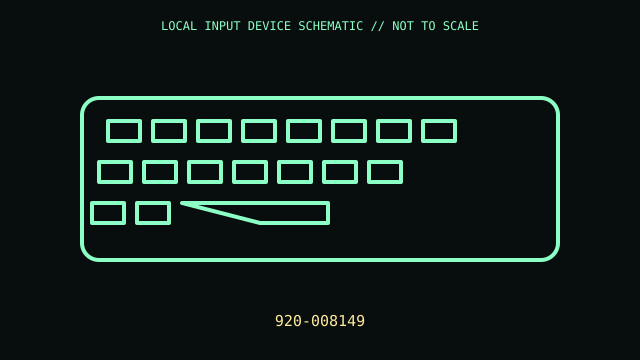

[ KEYBOARDS AND INTEGRATED POINTING DEVICES // IDENTIFIED COMPONENT ]
Logitech K780 Multi-Device Wireless Keyboard
Full-size multi-host keyboard with integrated device cradle.

MODEL IDENTIFICATION: 920-008149. Confirm the printed SKU, revision, bundle, region, and included accessories before repair or compatibility claims.
Model specifications
| Catalog leaf | Keyboards and integrated pointing devices |
|---|---|
| Exact model / identifier | 920-008149 |
| Mechanism and primary specifications | Full layout with number pad; Bluetooth LE or Unifying receiver; switches among three hosts; two AAA cells; integrated phone/tablet cradle. |
| Compatibility and interface caveats | 920-008149 is a regional SKU; confirm layout and whether Unifying receiver is included. Special key behavior is OS dependent. |
| Revision identification | Record the full label and software/firmware revision. Similar product-family names may use different protocols, components, connectors, or bundled accessories. |
Preservation and service
Remove batteries for storage; do not overload cradle or clean its rubber surfaces with solvents; retain Unifying receiver.
Separate observed condition and test setup from vendor-published specifications; record host OS, driver/app version, cables, adapters, and accessories.
Primary manufacturer sources
- Logitech K780 supportManufacturer documentation; verify the exact SKU, revision, region, and accessories against the unit label.
- Logitech keyboard catalogManufacturer documentation; verify the exact SKU, revision, region, and accessories against the unit label.
Manufacturer support pages can change; retain the applicable manual and its revision in the physical equipment record.